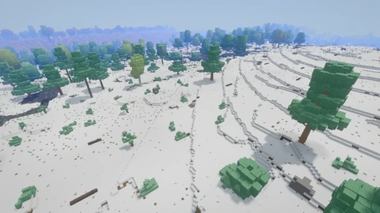

A FIELD GUIDE TO
Voxelgame
An island survival sandbox. Gather materials, make tools and build a place of your own. Or explore and build freely in creative mode.
Press / to search. Enter selects a result; Escape clears.

Inside the game
Places, creatures and things to makeBiomes
Biomes are the world’s different landscapes, from forests and meadows to deserts and coral reefs.

Pine highlandsGame capture, 28 September 2026
Mobs
Meet the animals that live on land, in the water and in the air. Find their names and habitats.


Model portraits · Browse all 94 animals
Items
Tools for gathering, bows and arrows for hunting, and materials for your next build.
- Stone pickaxe
- A tool for mining.
- Bows and arrows
- Draw, aim and release to shoot.
- Building blocks
- Wood, stone, glass and more.
Your first day
In survival, keep an eye on hunger and thirst while gathering supplies. Start with stone tools, then build somewhere to call home.